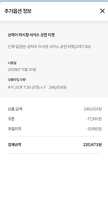

2026.10.29 — 11.02 · 상하이 · 우전 · 푸동공항. 동그라미를 누르면 그 장소의 해설 페이지로 가요.
어른의 역사와 맥락, 초등학생 탐정 미션, 중학생 인문 질문
기사님께 바로 보여주는 큼직한 중국어 명칭과 목적지 카드
명소 곳곳 숨은 미션을 해결하고 가족 스탬프를 완성해요
비행기 모드에서도 모든 사진·지도가 100% 열려요
푸동 입국 픽업 ➡️ 골든튤립 체크인 ➡️ 베이징덕 ➡️ 와이탄 밤 산책
명나라 정원 ➡️ 12:10 신세계성 가이드 미팅 ➡️ 수향마을 나룻배와 야경
도심 황금사찰 ➡️ 아시아 최대 로스터리 ➡️ 보행가 ➡️ 632m 마천루 118층
마당로 청사 ➡️ 딘타이펑 ➡️ 티엔즈팡 ➡️ 우캉루 ➡️ 북외탄 ➡️ 공항호텔
04:40 기상 ➡️ 05:00 호텔 무료셔틀(15분) ➡️ 05:30 T1 체크인 ➡️ 08:05 이륙
문장을 터치하면 클립보드에 바로 복사됩니다.
터치하면 기사님께 바로 보여줄 수 있는 큰 화면이 열립니다.

탭하면 예약 영수증을 크게 볼 수 있어요
체크인·탑승 때 화면을 그대로 보여주세요. 예약번호는 이 가이드북 안에서만 보세요.
각 장소를 탐험하며 미션을 완료할 때마다 체크해 보세요! 도장이 모두 모이면 상하이 탐험왕!
푸동공항 입국 심사대 및 세관 게이트에서 가족별 바코드를 터치하여 바로 보여주세요!